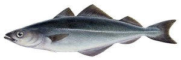
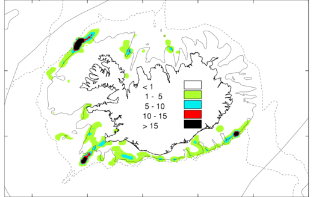
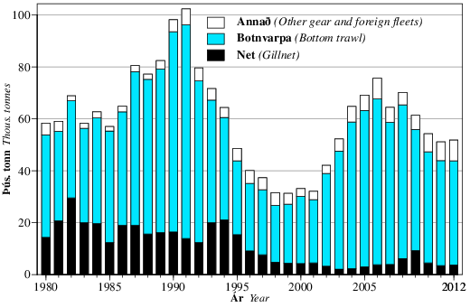
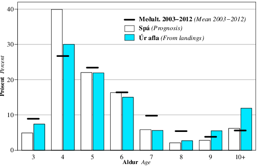
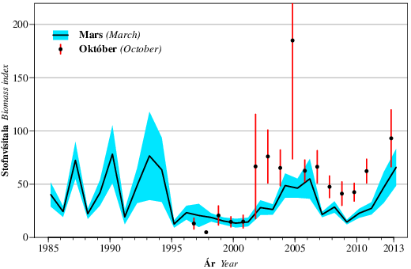
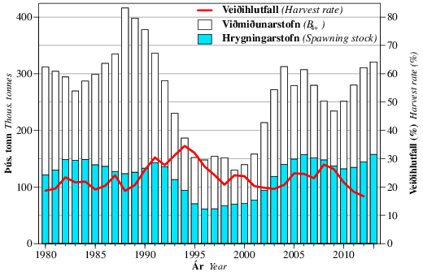
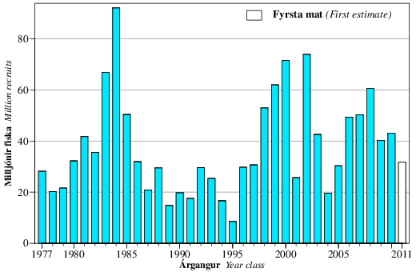
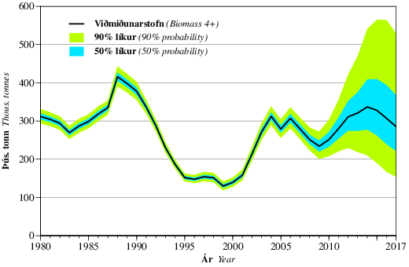

Nytjastofnar sjávar 2012/2013 — aflahorfur 2013/2014


Ufsi.
Veiðisvæði við Ísland árið 2012. Öll veiðarfæri sýnd. Dekkstu svæðin sýna mesta
veiði (tonn/sjm2).
Saithe.
Fishing grounds in 2012. All gears. The dark areas indicate highest catch
(tonnes/nmi2).
Ufsaaflinn árið 2012 var tæp 52 þús. tonn, tæpum 700 tonnum meiri en árið 2011 (mynd 2.3.1 og tafla 3.3.1). Á síðustu áratugum náði aflinn á Íslandsmiðum lágmarki á árunum 1998-2001, í rúmlega 30 þús. tonnum. Frá 2001 jókst aflinn og var 76 þús. tonn árið 2006, en minnkaði eftir það. Afli á fiskveiðiárinu 2011/2012 var tæp 51 þús. tonn en heildaraflamarkið var 50 þús. tonn (tafla 2.3.1).
| Ár | Tillaga | Aflamark | Afli | Afli annarra | Afli alls |
| Íslendinga | þjóða | ||||
| Year | Rec. | National | Landings | Landings | Total |
| TAC | TAC | (Iceland) | (others) | landings | |
| 1984 | 65 | 70 | 60 | 2 | 63 |
| 1985 | 60 | 70 | 55 | 2 | 57 |
| 1986 | 60 | 70 | 64 | 1 | 65 |
| 1987 | 65 | 70 | 78 | 2 | 81 |
| 1988 | 75 | 80 | 74 | 3 | 77 |
| 1989 | 80 | 80 | 80 | 3 | 82 |
| 1990 | 90 | 90 | 95 | 3 | 98 |
| 19911) | 65 | 65 | 69 | 2 | 71 |
| 1991/92 | 70 | 75 | 86 | 2 | 88 |
| 1992/93 | 80 | 92 | 76 | 2 | 78 |
| 1993/94 | 75 | 85 | 67 | 2 | 69 |
| 1994/95 | 70 | 75 | 50 | 1 | 61 |
| 1995/96 | 65 | 70 | 40 | 1 | 41 |
| 1996/97 | 50 | 50 | 37 | 1 | 38 |
| 1997/98 | 30 | 30 | 32 | 1 | 33 |
| 1998/99 | 30 | 30 | 31 | 1 | 32 |
| 1999/00 | 25 | 30 | 30 | 0 | 30 |
| 2000/01 | 25 | 30 | 32 | 0 | 32 |
| 2001/02 | 25 | 37 | 36 | 0 | 36 |
| 2002/03 | 35 | 45 | 47 | 0 | 47 |
| 2003/04 | 50 | 50 | 56 | 0 | 56 |
| 2004/05 | 70 | 70 | 70 | 1 | 71 |
| 2005/06 | 80 | 80 | 78 | 0 | 78 |
| 2006/07 | 80 | 80 | 66 | 0 | 66 |
| 2007/08 | 60 | 80 | 68 | 0 | 68 |
| 2008/09 | 50 | 65 | 62 | 0 | 62 |
| 2009/10 | 35 | 50 | 58 | 0 | 58 |
| 2010/11 | 40 | 50 | 52 | 1 | 52 |
| 2011/12 | 45 | 52 | 50 | 1 | 51 |
| 2012/13 | 49 | 50 | |||
| 1) Tímabilið janúar-ágúst 1991. January-August 1991. | |||||

Mynd 2.3.1. Ufsi.
Heildarafli (þús. tonn) árin 1982-2012 eftir veiðarfærum.
Figure 2.3.1. Saithe.
Total landings (thous. tonnes) 1982-2012 by gear type.
Hlutdeild botnvörpu í heildarafla árið 2012 var 77% á meðan 7% veiddust í net, sem eru svipuð hlutföll og meðaltalið frá 2000. Áberandi breyting á skiptingu ufsaafla eftir veiðarfærum átti sér stað á tíunda áratugnum, þar sem hlutdeild neta var að meðaltali 26% á árunum 1982-1996, en að jafnaði innan við 10% eftir það.
Aldurssamsetning aflans 2012 er sýnd á mynd 2.3.2 ásamt spá sem gerð var við úttekt vorið 2012. Skipting aflans í fjölda eftir aldri á árunum 1980-2012 er sýnd í töflu 3.3.2. Árið 2012 var hlutdeild 3 ára ufsa 7% og 4 ára um 30%. Minna veiddist af 4 ára ufsa en spáð var og hlutdeild 9 ára og eldri reyndist að sama skapi hærri.

Mynd 2.3.2. Ufsi.
Aldursdreifing í afla 2012 (% af fjölda) borin saman við spá frá í fyrra.
Meðalaldursdreifing áranna 2003-2012 er jafnframt sýnd.
Figure 2.3.2. Saithe
Age distribution in the 2012 catch (% by number) compared to last year's
prediction. Mean age distribution (2003-2012) is also shown.
Meðalþyngd ufsa eftir aldri var óvenju lág árin 2005-2009 en hefur aukist, sérstaklega hjá 6-8 ára ufsa sem mælist nú nálægt langtímameðaltali (tafla 3.3.3). Hjá ufsa er neikvætt samband milli árgangastærðar og meðalþyngdar. Einnig eru dæmi þess að meðalþyngd árgangs standi nánast í stað eða minnki með aldri. Slíkar breytingar hafa verið túlkaðar sem vísbendingar um að umtalsverður fjöldi hægvaxta ufsa hafi gengið inn á íslenskt hafsvæði. Erfitt er þó að greina á milli þess hvort þéttleiki og umhverfisþættir dragi úr vexti eða meðalþyngd minnki vegna göngu ufsa af öðrum hafsvæðum.
Meðalþyngd ufsa í stofnmælingu botnfiska í mars (SMB) sýnir svipaða þróun og þyngd í lönduðum afla (töflur 3.3.3 og 3.3.4). Í stofnmælingunni er þó mun meiri breytileiki í meðalþyngd hvers aldurshóps en í afla. Við úttekt er stærð hrygningar- og viðmiðunarstofns reiknuð út frá þyngdum aldurshópa í afla.
Meðalþyngdum 4-9 ára ufsa í afla 2013 er spáð með líkani sem notar þyngd sama árgangs ári fyrr í afla og þyngd sama árs í stofnmælingu sem skýribreytur. Meðalþyngdir 3 og 10-14 ára ufsa eru hins vegar áætlaðar út frá meðaltali síðustu þriggja ára. Í framreikningum er gert ráð fyrir að meðalþyngdir í afla næstu ára verði svipaðar og 2013.
Upplýsingar um kynþroskahlutfall fást úr stofnmælingum (tafla 3.3.5), en töluverður breytileiki er í mati á kynþroskahlutfalli frá ári til árs. Það stafar af breytileika í því hvar ufsi fæst í stofnmælingum. Kynþroski er metinn með líkani sem nýtir gögn úr SMB og í framreikningum eru notuð gildi líkansins fyrir árið í ár.
Ufsi mælist fremur illa í stofnmælingum með botnvörpu, enda er hann torfufiskur sem gjarnan heldur sig talsvert ofan við botn. Þetta kemur fram í vísitölum stofnmælinga sem sýna miklar breytingar frá einu ári til annars, sér í lagi fyrir 1996 (mynd 2.3.3). Breytileiki í stofnvísitölum er einn helsti óvissuþátturinn í stofnmati ufsa. Þrátt fyrir að ufsi mælist fremur illa í stofnmælingum sýnir samanburður fyrri ára að hægt er að nýta vísitölur úr SMB (tafla 3.3.6) við mat á stofnstærð. Heildarvísitala úr SMB var tiltölulega há 2004-2006, um helmingi lægri 2007-2011 og aftur há 2012-2013 (mynd 2.3.3). Stofnmæling að hausti (SMH) og gögn um afla á sóknareiningu gefa svipaða mynd af þróun stofnsins.

Mynd 2.3.3. Ufsi.
Heildarvísitölur (í þyngd) úr stofnmælingum í mars og október. Skyggða svæðið og
lóðréttu línurnar sýna eitt staðalfrávik í mati á vísitölunum.
Figure 2.3.3. Saithe
Total biomass indices in the Icelandic groundfish surveys in March and October.
Shaded area and vertical lines show one standard deviation in the estimate.
Við stofnstærðarmat er notað aldurs-aflalíkan sem er fellt að aldursgreindum afla og aldursskiptum fjöldavísitölum úr SMB. Gert er ráð fyrir föstu veiðimynstri innan þriggja tímabila, áranna 1980-1996, 1997-2003 og loks frá og með 2004. Upphaf annars tímabilsins miðast við minnkaða hlutdeild neta frá 1997. Upphaf þriðja tímabilsins miðast við vísbendingar í gögnum um að veiðar hafi færst í auknum mæli í smáfisk á síðustu árum.
Hrygningarstofninn í ársbyrjun 2013 er metinn 158 þús. tonn og viðmiðunarstofninn (4 ára og eldri) 321 þús. tonn (mynd 2.3.4 og tafla 3.3.7). Viðmiðunarstofninn er metinn yfir langtímameðaltali, svipað stór og 2004-2006, en nokkuð minni en 1988-1991. Veiðihlutfall (afli/viðmiðunarstofn) ársins 2012 er metið 17% og meðalveiðidánartalan 0.19.

Mynd 2.3.4. Ufsi.
Stærð hrygningarstofns og viðmiðunarstofns 1980-2013 og veiðihlutfall
(afli/viðmiðunarstofn) 1980-2012.
Figure 2.3.4. Saithe.
Spawning stock biomass and reference biomass (ages 4+) in 1980-2013 and harvest
rate (landings/reference biomass) in 1980-2012.
Sterkir árgangar 1998-2000 og 2002 urðu til þess að viðmiðunarstofninn var tiltölulega stór 2003-2007, aflinn á þeim árum var að meðaltali 65 þús. tonn og veiðihlutfallið nálægt 23%. Eftir því sem þessir árgangar hurfu úr stofninum var hins vegar ekki dregið jafn hratt úr veiðum, með þeim afleiðingum að veiðihlutfallið varð hærra 2008 og 2009 en árin á undan, í kringum 27%.
Nýliðun er metin sem fjöldi við þriggja ára aldur. Árgangarnir frá 1998-2000 og 2002 eru metnir stórir en nýliðun hefur verið í meðallagi eftir það (mynd 2.3.5).

Mynd 2.3.5. Ufsi.
Stærð árganganna 1977-2011. Fjöldi við þriggja ára aldur (í milljónum).
Figure 2.3.5. Saithe.
Size of year classes 1977-2011 at age 3 (in millions).

Mynd 2.3.6. Ufsi.
Stærð viðmiðunarstofns frá árinu 1980 ásamt framreikningum til ársins 2017 miðað
við að afli verði samkvæmt aflareglu.
Figure 2.3.6. Saithe.
Reference biomass from 1980 and projection to 2017 based on harvest control
rule.
Í framreikningum er gert ráð fyrir að afli árið 2013 verði 52 þús. tonn, sem er byggt á gangi veiða á þessu almanaksári borið saman við árið 2012. Framreikningar benda til að viðmiðunarstofninn í ársbyrjun 2014 verði 337 þús. tonn og hrygningarstofninn 177 þús. tonn, sem er nokkur hækkun milli ára (mynd 2.3.6).
Aldurs-aflalíkanið gefur talsvert hærra stofnmat en síðustu ár og hærra en önnur stofnlíkön sem keyrð hafa verið til hliðsjónar. Líkönin eru frekar samhljóða um þróun stofnsins þar til um 2010, en eftir það fylgja þau mismikið þeirri miklu hækkun sem hefur orðið í stofnvísitölum úr SMB allra síðustu ár (mynd 2.3.3). Í heild má álykta að munurinn á líkönunum endurspegli talsverða óvissu um núverandi stofnstærð, sem veltur á áreiðanleika SMB stofnvísitalna, og að stofnmat aldurs-aflalíkansins í ár sé líklegra til að vera ofmat heldur en vanmat.
Tafla 2.3.2 sýnir tillögur Hafrannsóknastofnunar um aflamark, ákvörðun stjórnvalda um heildaraflamark og ufsaafla síðan 1984.
Í apríl 2013 tóku íslensk stjórnvöld upp formlega nýtingarstefnu fyrir ufsaveiðar, sem er samkvæmt mati Alþjóðahafrannsóknaráðsins (ICES) í samræmi við alþjóðleg varúðarsjónarmið, sem og stefnu íslenskra stjórnvalda um sjálfbæra nýtingu fiskistofna og hámarksafrakstur til lengri tíma litið. Nýtingarstefnan byggir á aflareglu sem setur aflamark komandi fiskveiðiárs sem meðaltal síðasta aflamarks og 20% af viðmiðunarstofni núverandi árs. Ef hrygningarstofn fer undir gátmörk (Btrigger = 65 þús. tonn) er dregið úr veiðihlutfallinu. Fyrir stjórnun ufsaveiða mun aflareglan leiða til minni sveiflu í aflamarki milli ára, í samanburði við þær sveiflur sem geta orðið í stofnmati.
| 2013 | 2014 | 2015 | ||||||
| Áætl. afli | Viðm. | Hrygn. | Aflamark | Viðm. | Hrygn. | Viðm. | Hrygn. | |
| Pred. | stofn | stofn | stofn | stofn | stofn | stofn | ||
| landings | B4+ | SSB | F1) | TAC | B4+ | SSB | B4+ | SSB |
| 52 | 321 | 158 | 0.18 | 57 | 337 | 177 | 328 | 188 |
| 1) Meðalveiðidánartala 4-9 ára ufsa. Mean fishing mortality of age groups 4-9. | ||||||||
Samkvæmt fyrirliggjandi stofnmati gefur 20% aflaregla, þar sem tekið er tillit til aflamarks yfirstandandi fiskveiðiárs, 57 þús. tonn á fiskveiðiárinu 2013/2014. Áætluð áhrif þessa aflamarks á þróun stofnstærðar eru sýnd í töflu 2.3.2.